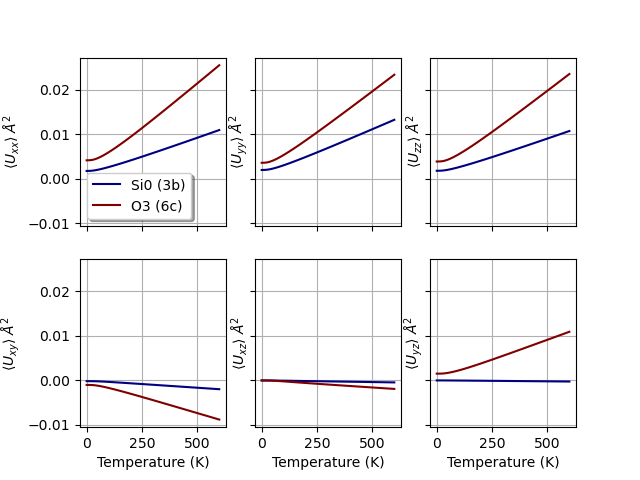

<!DOCTYPE html>

<html xmlns="http://www.w3.org/1999/xhtml">
  <head>
    <meta charset="utf-8" />
    <title>Projected phonon DOS &#8212; abipy 0.7.0 documentation</title>
    <link rel="stylesheet" href="../_static/bootstrap-sphinx.css" type="text/css" />
    <link rel="stylesheet" href="../_static/pygments.css" type="text/css" />
    <link rel="stylesheet" type="text/css" href="../_static/graphviz.css" />
    <link rel="stylesheet" type="text/css" href="../_static/gallery.css" />
    <link rel="stylesheet" type="text/css" href="../_static/my_style.css" />
    <script type="text/javascript" id="documentation_options" data-url_root="../" src="../_static/documentation_options.js"></script>
    <script type="text/javascript" src="../_static/jquery.js"></script>
    <script type="text/javascript" src="../_static/underscore.js"></script>
    <script type="text/javascript" src="../_static/doctools.js"></script>
    <script type="text/javascript" src="../_static/language_data.js"></script>
    <script async="async" type="text/javascript" src="https://cdnjs.cloudflare.com/ajax/libs/mathjax/2.7.5/latest.js?config=TeX-AMS-MML_HTMLorMML"></script>
    <link rel="index" title="Index" href="../genindex.html" />
    <link rel="search" title="Search" href="../search.html" />
    <link rel="next" title="Optic results" href="plot_optic.html" />
    <link rel="prev" title="Band structure interpolation with Wannier functions" href="plot_wannier90_abiwan.html" />
<meta charset='utf-8'>
<meta http-equiv='X-UA-Compatible' content='IE=edge,chrome=1'>
<meta name='viewport' content='width=device-width, initial-scale=1.0, maximum-scale=1'>
<meta name="apple-mobile-web-app-capable" content="yes">
<script type="text/javascript" src="../_static/js/jquery-1.11.0.min.js "></script>
<script type="text/javascript" src="../_static/js/jquery-fix.js "></script>
<script type="text/javascript" src="../_static/bootstrap-3.3.7/js/bootstrap.min.js "></script>
<script type="text/javascript" src="../_static/bootstrap-sphinx.js "></script>

  </head><body>

  <div id="navbar" class="navbar navbar-default navbar-fixed-top">
    <div class="container">
      <div class="navbar-header">
        <!-- .btn-navbar is used as the toggle for collapsed navbar content -->
        <button type="button" class="navbar-toggle" data-toggle="collapse" data-target=".nav-collapse">
          <span class="icon-bar"></span>
          <span class="icon-bar"></span>
          <span class="icon-bar"></span>
        </button>
        <a class="navbar-brand" href="../index.html">
          abipy</a>
        <span class="navbar-text navbar-version pull-left"><b>0.7.0</b></span>
      </div>

        <div class="collapse navbar-collapse nav-collapse">
          <ul class="nav navbar-nav">
            
            
              <li class="dropdown globaltoc-container">
  <a role="button"
     id="dLabelGlobalToc"
     data-toggle="dropdown"
     data-target="#"
     href="../index.html">Site <b class="caret"></b></a>
  <ul class="dropdown-menu globaltoc"
      role="menu"
      aria-labelledby="dLabelGlobalToc"><ul>
<li class="toctree-l1"><a class="reference internal" href="../features.html">Overview</a></li>
<li class="toctree-l1"><a class="reference internal" href="../installation.html">Getting AbiPy</a></li>
<li class="toctree-l1"><a class="reference internal" href="../changelog.html">Changelog</a></li>
<li class="toctree-l1"><a class="reference internal" href="../zzbiblio.html">Bibliography</a></li>
</ul>
<ul class="current">
<li class="toctree-l1"><a class="reference internal" href="../scripts/index.html">Scripts</a></li>
<li class="toctree-l1 current"><a class="reference internal" href="index.html">AbiPy Gallery</a></li>
<li class="toctree-l1"><a class="reference internal" href="../postprocessing_howto.html">Post-processing How-To</a></li>
</ul>
<ul>
<li class="toctree-l1"><a class="reference internal" href="../workflows/taskmanager.html">TaskManager</a></li>
<li class="toctree-l1"><a class="reference internal" href="../workflows/manager_examples.html">Manager Examples</a></li>
<li class="toctree-l1"><a class="reference internal" href="../flow_gallery/index.html">Flow Gallery</a></li>
<li class="toctree-l1"><a class="reference internal" href="../flows_howto.html">Flows How-To</a></li>
</ul>
<ul>
<li class="toctree-l1"><a class="reference internal" href="../api/index.html">API documentation</a></li>
<li class="toctree-l1"><a class="reference internal" href="../coding_guide.html">Coding guide</a></li>
<li class="toctree-l1"><a class="reference internal" href="../README.html">Documenting AbiPy</a></li>
</ul>
</ul>
</li>
              
                <li class="dropdown">
  <a role="button"
     id="dLabelLocalToc"
     data-toggle="dropdown"
     data-target="#"
     href="#">Page <b class="caret"></b></a>
  <ul class="dropdown-menu localtoc"
      role="menu"
      aria-labelledby="dLabelLocalToc"><ul>
<li><a class="reference internal" href="#">Projected phonon DOS</a></li>
</ul>
</ul>
</li>
              
            
            
              
                
  <li>
    <a href="plot_wannier90_abiwan.html" title="Previous Chapter: Band structure interpolation with Wannier functions"><span class="glyphicon glyphicon-chevron-left visible-sm"></span><span class="hidden-sm hidden-tablet">&laquo; Band structur...</span>
    </a>
  </li>
  <li>
    <a href="plot_optic.html" title="Next Chapter: Optic results"><span class="glyphicon glyphicon-chevron-right visible-sm"></span><span class="hidden-sm hidden-tablet">Optic results &raquo;</span>
    </a>
  </li>
              
            
            
            
            
              <li class="hidden-sm">
<div id="sourcelink">
  <a href="../_sources/gallery/plot_phonons_msqd.rst.txt"
     rel="nofollow">Source</a>
</div></li>
            
          </ul>

          
            
<form class="navbar-form navbar-right" action="../search.html" method="get">
 <div class="form-group">
  <input type="text" name="q" class="form-control" placeholder="Search" />
 </div>
  <input type="hidden" name="check_keywords" value="yes" />
  <input type="hidden" name="area" value="default" />
</form>
          
        </div>
    </div>
  </div>

<div class="container">
  <div class="row">
    <div class="body col-md-12 content" role="main">
      
  <div class="sphx-glr-download-link-note admonition note">
<p class="admonition-title">Note</p>
<p>Click <a class="reference internal" href="#sphx-glr-download-gallery-plot-phonons-msqd-py"><span class="std std-ref">here</span></a> to download the full example code</p>
</div>
<div class="sphx-glr-example-title section" id="projected-phonon-dos">
<span id="sphx-glr-gallery-plot-phonons-msqd-py"></span><h1>Projected phonon DOS<a class="headerlink" href="#projected-phonon-dos" title="Permalink to this headline">¶</a></h1>
<p>This example shows how to plot the generalized phonon DOS with the mean square
displacement tensor in cartesian coords and how to calculate Debye Waller factors
as a function of temperature.
See <a class="reference internal" href="../zzbiblio.html#lee1995" id="id1">[Lee1995]</a> for the further details about the internal implementation and
<a class="reference internal" href="../zzbiblio.html#trueblood1996" id="id2">[Trueblood1996]</a> for the different conventions used by crystallographers.</p>
<ul class="sphx-glr-horizontal">
<li>
</li>
<li>
</li>
<li>
</li>
</ul>
<p class="sphx-glr-script-out">Out:</p>
<div class="sphx-glr-script-out highlight-none notranslate"><div class="highlight"><pre><span></span>Creating temporary file: /var/folders/nc/k69spyd12qv2tk3stk2xrxg40000gr/T/tmpi3ta41_6mp-7000_DDB
/Users/gmatteo/git_repos/pymatgen/pymatgen/util/plotting.py:550: UserWarning: Matplotlib is currently using agg, which is a non-GUI backend, so cannot show the figure.
  plt.show()
</pre></div>
</div>
<div class="line-block">
<div class="line"><br /></div>
</div>
<div class="highlight-default notranslate"><div class="highlight"><pre><span></span><span class="kn">import</span> <span class="nn">os</span>
<span class="kn">import</span> <span class="nn">abipy.data</span> <span class="k">as</span> <span class="nn">abidata</span>

<span class="kn">from</span> <span class="nn">abipy</span> <span class="k">import</span> <span class="n">abilab</span>

<span class="c1"># Open DDB file for alpha-SiO2 taken from https://materialsproject.org/materials/mp-7000/</span>
<span class="n">filepath</span> <span class="o">=</span> <span class="n">os</span><span class="o">.</span><span class="n">path</span><span class="o">.</span><span class="n">join</span><span class="p">(</span><span class="n">abidata</span><span class="o">.</span><span class="n">dirpath</span><span class="p">,</span> <span class="s2">&quot;refs&quot;</span><span class="p">,</span> <span class="s2">&quot;mp-7000_DDB.bz2&quot;</span><span class="p">)</span>
<span class="n">ddb</span> <span class="o">=</span> <span class="n">abilab</span><span class="o">.</span><span class="n">abiopen</span><span class="p">(</span><span class="n">filepath</span><span class="p">)</span>

<span class="c1"># Invoke anaddb to compute phonon bands and dos.</span>
<span class="c1">#dos_method = &quot;gaussian&quot;</span>
<span class="n">dos_method</span> <span class="o">=</span> <span class="s2">&quot;tetra&quot;</span>
<span class="n">phbst_file</span><span class="p">,</span> <span class="n">phdos_file</span> <span class="o">=</span> <span class="n">ddb</span><span class="o">.</span><span class="n">anaget_phbst_and_phdos_files</span><span class="p">(</span><span class="n">nqsmall</span><span class="o">=</span><span class="mi">4</span><span class="p">,</span> <span class="n">dos_method</span><span class="o">=</span><span class="n">dos_method</span><span class="p">,</span> <span class="n">ndivsm</span><span class="o">=</span><span class="mi">1</span><span class="p">,</span> <span class="n">mpi_procs</span><span class="o">=</span><span class="mi">2</span><span class="p">)</span>

<span class="c1"># Extract msqd_dos</span>
<span class="n">msqd_dos</span> <span class="o">=</span> <span class="n">phdos_file</span><span class="o">.</span><span class="n">msqd_dos</span>
<span class="c1">#print(msqd_dos)</span>

<span class="c1">#for fmt in (&quot;cartesian&quot;, &quot;cif&quot;, &quot;ustar&quot;, &quot;beta&quot;, &quot;B&quot;):</span>
<span class="k">for</span> <span class="n">fmt</span> <span class="ow">in</span> <span class="p">(</span><span class="s2">&quot;cartesian&quot;</span><span class="p">,</span> <span class="s2">&quot;cif&quot;</span><span class="p">):</span>
    <span class="n">df</span> <span class="o">=</span> <span class="n">msqd_dos</span><span class="o">.</span><span class="n">get_dataframe</span><span class="p">(</span><span class="n">temp</span><span class="o">=</span><span class="mi">300</span><span class="p">,</span> <span class="n">view</span><span class="o">=</span><span class="s2">&quot;all&quot;</span><span class="p">,</span> <span class="n">fmt</span><span class="o">=</span><span class="n">fmt</span><span class="p">)</span>
    <span class="n">abilab</span><span class="o">.</span><span class="n">print_dataframe</span><span class="p">(</span><span class="n">df</span><span class="p">,</span> <span class="n">title</span><span class="o">=</span><span class="s2">&quot;Format: </span><span class="si">%s</span><span class="s2">&quot;</span> <span class="o">%</span> <span class="n">fmt</span><span class="p">)</span>

<span class="c1"># Plot generalized phonon DOS for each inequivalent atom in the unit cell.</span>
<span class="n">msqd_dos</span><span class="o">.</span><span class="n">plot</span><span class="p">()</span>

<span class="c1"># Plot tensor(T) for each inequivalent atom.</span>
<span class="n">msqd_dos</span><span class="o">.</span><span class="n">plot_tensor</span><span class="p">()</span>

<span class="n">msqd_dos</span><span class="o">.</span><span class="n">plot_uiso</span><span class="p">()</span>

<span class="c1"># To save the structure and the U tensor at T=300K in CIF format, use:</span>
<span class="c1">#msqd_dos.write_cif_file(&quot;DW.cif&quot;, temp=300)</span>

<span class="c1"># To visualize the thermal ellipsoids with Vesta, use:</span>
<span class="c1">#msqd_dos.vesta_open(temp=300)</span>

<span class="c1"># Remember to close the files.</span>
<span class="n">phbst_file</span><span class="o">.</span><span class="n">close</span><span class="p">()</span>
<span class="n">phdos_file</span><span class="o">.</span><span class="n">close</span><span class="p">()</span>
</pre></div>
</div>
<p class="sphx-glr-timing"><strong>Total running time of the script:</strong> ( 0 minutes  5.050 seconds)</p>
<div class="sphx-glr-footer class sphx-glr-footer-example docutils container" id="sphx-glr-download-gallery-plot-phonons-msqd-py">
<div class="sphx-glr-download docutils container">
<p><a class="reference download internal" download="" href="../_downloads/77af911129307dfa1fd256a9984ee9c0/plot_phonons_msqd.py"><code class="xref download docutils literal notranslate"><span class="pre">Download</span> <span class="pre">Python</span> <span class="pre">source</span> <span class="pre">code:</span> <span class="pre">plot_phonons_msqd.py</span></code></a></p>
</div>
<div class="sphx-glr-download docutils container">
<p><a class="reference download internal" download="" href="../_downloads/58c7c413ae262f22e9fb943fe20ad66f/plot_phonons_msqd.ipynb"><code class="xref download docutils literal notranslate"><span class="pre">Download</span> <span class="pre">Jupyter</span> <span class="pre">notebook:</span> <span class="pre">plot_phonons_msqd.ipynb</span></code></a></p>
</div>
</div>
<p class="sphx-glr-signature"><a class="reference external" href="https://sphinx-gallery.github.io">Gallery generated by Sphinx-Gallery</a></p>
</div>


    </div>
      
  </div>
</div>
<footer class="footer">
  <div class="container">
    <p class="pull-right">
      <a href="#">Back to top</a>
      
    </p>
    <p>
        &copy; Copyright 2018, M. Giantomassi and the AbiPy group.<br/>
      Last updated on Oct 18, 2019.<br/>
      Created using <a href="http://sphinx-doc.org/">Sphinx</a> 2.2.0.<br/>
    </p>
  </div>
</footer>
  </body>
</html>